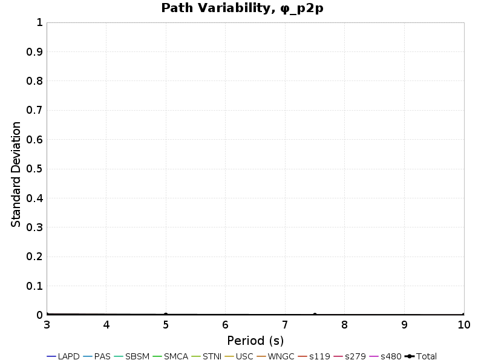
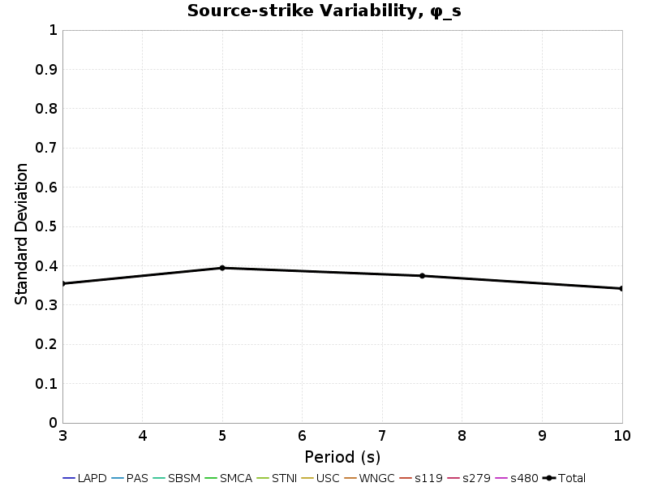
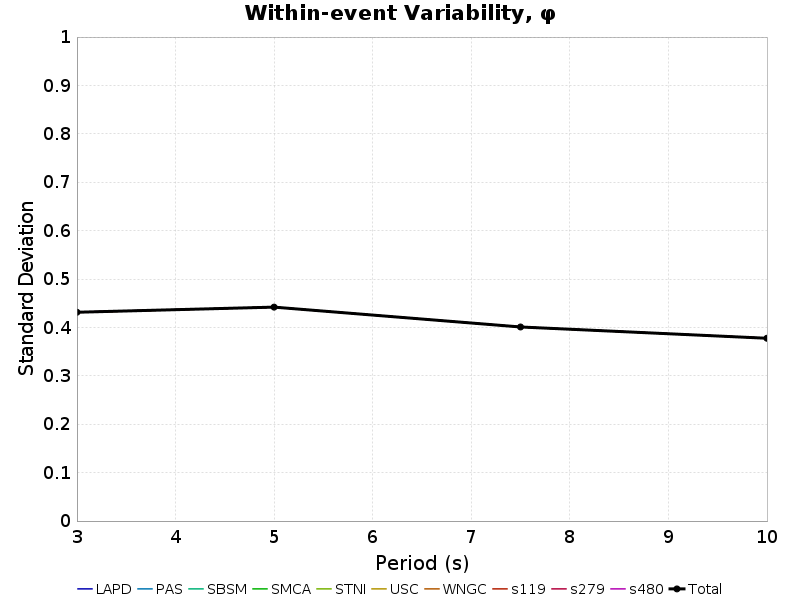

| Events | 75 |
|---|---|
| Sites | 10 |
| Source Rotation Azimuths | 36 |
| Site-To-Source Path Azimuths | 4 |
| Source-Site Distance[s] | 20.0,50.0 km |
| Total # Simulations | 216000 |
| Name | Location | Vs30 (m/s) | Z1.0 (km) | Z2.5 (km) |
|---|---|---|---|---|
| LAPD | 34.557, -118.125 | 863 | N/A | N/A |
| PAS | 34.148426, -118.17119 | 863 | N/A | N/A |
| SBSM | 34.064987, -117.29201 | 863 | N/A | N/A |
| SMCA | 34.00909, -118.48939 | 863 | N/A | N/A |
| STNI | 33.93088, -118.17881 | 863 | N/A | N/A |
| USC | 34.0192, -118.286 | 863 | N/A | N/A |
| WNGC | 34.041824, -118.0653 | 863 | N/A | N/A |
| s119 | 34.55314, -118.72826 | 863 | N/A | N/A |
| s279 | 34.37809, -118.34757 | 863 | N/A | N/A |
| s480 | 34.15755, -117.87389 | 863 | N/A | N/A |
Path variability, denoted φP2P in Al Atik 2010, is computed from ground motion residuals where the following quantities are held constant:
and the following quantities vary:
Here is an exmample with 5 rotations:
Standard deviation is computed and tabulated separately for each site and distance, then a total standard deviation is computed from all site and distances and reported in the "ALL SITES" row.

| Site | 3s Std. Dev. | 3s Residual Range | 5s Std. Dev. | 5s Residual Range | 7.5s Std. Dev. | 7.5s Residual Range | 10s Std. Dev. | 10s Residual Range |
|---|---|---|---|---|---|---|---|---|
| LAPD | 0 | [-0.03 0.03] | 0 | [-0.02 0.02] | 0 | [-0.01 0.01] | 0 | [-0.01 0.01] |
| PAS | 0 | [-0.03 0.04] | 0 | [-0.01 0.01] | 0 | [-0.01 0.02] | 0 | [-0.01 0.02] |
| SBSM | 0 | [-0.05 0.03] | 0 | [-0.01 0.01] | 0 | [-0.01 0.01] | 0 | [-0.01 0.01] |
| SMCA | 0 | [-0.03 0.03] | 0 | [-0.03 0.02] | 0 | [-0.01 0.01] | 0 | [-0.01 0.01] |
| STNI | 0 | [-0.03 0.04] | 0 | [-0.01 0.02] | 0 | [-0.02 0.02] | 0 | [-0.01 0.01] |
| USC | 0 | [-0.04 0.03] | 0 | [-0.02 0.02] | 0 | [-0.01 0.02] | 0 | [-0.01 0.02] |
| WNGC | 0 | [-0.02 0.02] | 0 | [-0.02 0.02] | 0 | [-0.01 0.01] | 0 | [-0.01 0.01] |
| s119 | 0 | [-0.06 0.03] | 0 | [-0.01 0.01] | 0 | [-0.01 0.02] | 0 | [-0.01 0.01] |
| s279 | 0 | [-0.03 0.04] | 0 | [-0.02 0.01] | 0 | [-0.01 0.01] | 0 | [-0.02 0.01] |
| s480 | 0 | [-0.03 0.03] | 0 | [-0.01 0.01] | 0 | [-0.01 0.01] | 0 | [-0.01 0.02] |
| ALL SITES | 0 | [-0.06 0.04] | 0 | [-0.03 0.02] | 0 | [-0.02 0.02] | 0 | [-0.02 0.02] |
| Site | 3s Std. Dev. | 3s Residual Range | 5s Std. Dev. | 5s Residual Range | 7.5s Std. Dev. | 7.5s Residual Range | 10s Std. Dev. | 10s Residual Range |
|---|---|---|---|---|---|---|---|---|
| LAPD | 0 | [-0.04 0.05] | 0 | [-0.03 0.03] | 0 | [-0.02 0.02] | 0 | [-0.02 0.01] |
| PAS | 0 | [-0.1 0.05] | 0 | [-0.04 0.04] | 0 | [-0.03 0.02] | 0 | [-0.01 0.03] |
| SBSM | 0 | [-0.1 0.06] | 0 | [-0.04 0.03] | 0 | [-0.02 0.02] | 0 | [-0.02 0.01] |
| SMCA | 0 | [-0.09 0.07] | 0 | [-0.04 0.03] | 0 | [-0.03 0.02] | 0 | [-0.01 0.01] |
| STNI | 0 | [-0.08 0.05] | 0 | [-0.03 0.05] | 0 | [-0.02 0.02] | 0 | [-0.02 0.02] |
| USC | 0 | [-0.07 0.06] | 0 | [-0.04 0.03] | 0 | [-0.03 0.02] | 0 | [-0.02 0.02] |
| WNGC | 0 | [-0.04 0.05] | 0 | [-0.04 0.04] | 0 | [-0.01 0.03] | 0 | [-0.01 0.02] |
| s119 | 0 | [-0.07 0.09] | 0 | [-0.04 0.03] | 0 | [-0.03 0.03] | 0 | [-0.03 0.02] |
| s279 | 0 | [-0.07 0.1] | 0 | [-0.03 0.05] | 0 | [-0.02 0.03] | 0 | [-0.02 0.02] |
| s480 | 0 | [-0.08 0.07] | 0 | [-0.04 0.03] | 0 | [-0.01 0.02] | 0 | [-0.02 0.02] |
| ALL SITES | 0 | [-0.1 0.1] | 0 | [-0.04 0.05] | 0 | [-0.03 0.03] | 0 | [-0.03 0.03] |
Source-strike variability, denoted φs, is computed from ground motion residuals where the following quantities are held constant:
and the following quantities vary:
Here is an exmample with 5 rotations:

Standard deviation is computed and tabulated separately for each site and distance, then a total standard deviation is computed from all site and distances and reported in the "ALL SITES" row.

| Site | 3s Std. Dev. | 3s Residual Range | 5s Std. Dev. | 5s Residual Range | 7.5s Std. Dev. | 7.5s Residual Range | 10s Std. Dev. | 10s Residual Range |
|---|---|---|---|---|---|---|---|---|
| LAPD | 0.35 | [-1.31 1.18] | 0.38 | [-1.36 1.3] | 0.39 | [-1.27 1.06] | 0.34 | [-1.04 0.8] |
| PAS | 0.35 | [-1.32 1.18] | 0.38 | [-1.34 1.29] | 0.39 | [-1.28 1.06] | 0.34 | [-1.04 0.8] |
| SBSM | 0.35 | [-1.32 1.17] | 0.38 | [-1.35 1.3] | 0.39 | [-1.27 1.05] | 0.34 | [-1.03 0.8] |
| SMCA | 0.35 | [-1.3 1.18] | 0.38 | [-1.35 1.29] | 0.39 | [-1.29 1.06] | 0.34 | [-1.04 0.81] |
| STNI | 0.35 | [-1.32 1.18] | 0.38 | [-1.36 1.29] | 0.39 | [-1.28 1.06] | 0.34 | [-1.04 0.81] |
| USC | 0.35 | [-1.32 1.18] | 0.38 | [-1.35 1.29] | 0.39 | [-1.29 1.06] | 0.34 | [-1.04 0.81] |
| WNGC | 0.35 | [-1.32 1.18] | 0.38 | [-1.35 1.29] | 0.39 | [-1.28 1.06] | 0.34 | [-1.04 0.8] |
| s119 | 0.35 | [-1.29 1.2] | 0.38 | [-1.36 1.29] | 0.39 | [-1.29 1.06] | 0.34 | [-1.05 0.8] |
| s279 | 0.35 | [-1.32 1.18] | 0.38 | [-1.36 1.29] | 0.39 | [-1.29 1.06] | 0.34 | [-1.04 0.8] |
| s480 | 0.35 | [-1.32 1.17] | 0.38 | [-1.35 1.3] | 0.39 | [-1.27 1.06] | 0.34 | [-1.04 0.8] |
| ALL SITES | 0.35 | [-1.32 1.2] | 0.38 | [-1.36 1.3] | 0.39 | [-1.29 1.06] | 0.34 | [-1.05 0.81] |
| Site | 3s Std. Dev. | 3s Residual Range | 5s Std. Dev. | 5s Residual Range | 7.5s Std. Dev. | 7.5s Residual Range | 10s Std. Dev. | 10s Residual Range |
|---|---|---|---|---|---|---|---|---|
| LAPD | 0.35 | [-1.23 1.18] | 0.41 | [-1.44 1.26] | 0.36 | [-1.04 1.21] | 0.34 | [-1.22 0.97] |
| PAS | 0.35 | [-1.22 1.19] | 0.41 | [-1.44 1.26] | 0.36 | [-1.04 1.21] | 0.34 | [-1.22 0.97] |
| SBSM | 0.35 | [-1.19 1.19] | 0.41 | [-1.44 1.26] | 0.36 | [-1.04 1.21] | 0.34 | [-1.22 0.97] |
| SMCA | 0.35 | [-1.22 1.19] | 0.41 | [-1.44 1.26] | 0.36 | [-1.04 1.21] | 0.34 | [-1.22 0.97] |
| STNI | 0.35 | [-1.22 1.19] | 0.41 | [-1.44 1.26] | 0.36 | [-1.04 1.21] | 0.34 | [-1.22 0.97] |
| USC | 0.35 | [-1.22 1.19] | 0.41 | [-1.44 1.26] | 0.36 | [-1.04 1.21] | 0.34 | [-1.22 0.97] |
| WNGC | 0.35 | [-1.22 1.19] | 0.41 | [-1.44 1.26] | 0.36 | [-1.04 1.21] | 0.34 | [-1.22 0.97] |
| s119 | 0.35 | [-1.23 1.17] | 0.41 | [-1.43 1.26] | 0.36 | [-1.04 1.21] | 0.34 | [-1.23 0.98] |
| s279 | 0.35 | [-1.22 1.18] | 0.41 | [-1.44 1.26] | 0.36 | [-1.04 1.21] | 0.34 | [-1.22 0.97] |
| s480 | 0.36 | [-1.23 1.19] | 0.41 | [-1.44 1.26] | 0.36 | [-1.04 1.21] | 0.34 | [-1.22 0.97] |
| ALL SITES | 0.35 | [-1.23 1.19] | 0.41 | [-1.44 1.26] | 0.36 | [-1.04 1.21] | 0.34 | [-1.23 0.98] |
Within-event variability, denoted φ in Al Atik 2010, is computed from ground motion residuals where the following quantities are held constant:
and the following quantities vary:
Standard deviation is computed and tabulated separately for each site and distance, then a total standard deviation is computed from all site and distances and reported in the "ALL SITES" row.

| Site | 3s Std. Dev. | 3s Residual Range | 5s Std. Dev. | 5s Residual Range | 7.5s Std. Dev. | 7.5s Residual Range | 10s Std. Dev. | 10s Residual Range |
|---|---|---|---|---|---|---|---|---|
| LAPD | 0.41 | [-1.38 1.26] | 0.41 | [-1.28 1.43] | 0.41 | [-1.43 1.15] | 0.37 | [-1.22 1.12] |
| PAS | 0.41 | [-1.35 1.26] | 0.41 | [-1.26 1.43] | 0.41 | [-1.45 1.15] | 0.37 | [-1.22 1.12] |
| SBSM | 0.41 | [-1.37 1.26] | 0.41 | [-1.28 1.43] | 0.41 | [-1.45 1.15] | 0.37 | [-1.22 1.12] |
| SMCA | 0.41 | [-1.36 1.26] | 0.41 | [-1.28 1.43] | 0.41 | [-1.43 1.15] | 0.37 | [-1.22 1.12] |
| STNI | 0.41 | [-1.35 1.26] | 0.41 | [-1.28 1.43] | 0.41 | [-1.44 1.14] | 0.37 | [-1.22 1.12] |
| USC | 0.41 | [-1.36 1.26] | 0.41 | [-1.28 1.43] | 0.41 | [-1.45 1.15] | 0.37 | [-1.22 1.12] |
| WNGC | 0.41 | [-1.37 1.26] | 0.41 | [-1.28 1.43] | 0.41 | [-1.44 1.14] | 0.37 | [-1.22 1.12] |
| s119 | 0.41 | [-1.36 1.26] | 0.41 | [-1.28 1.43] | 0.41 | [-1.41 1.15] | 0.37 | [-1.2 1.13] |
| s279 | 0.41 | [-1.36 1.26] | 0.41 | [-1.28 1.43] | 0.41 | [-1.42 1.15] | 0.37 | [-1.22 1.12] |
| s480 | 0.41 | [-1.37 1.26] | 0.41 | [-1.27 1.43] | 0.41 | [-1.44 1.15] | 0.37 | [-1.21 1.12] |
| ALL SITES | 0.41 | [-1.38 1.26] | 0.41 | [-1.28 1.43] | 0.41 | [-1.45 1.15] | 0.37 | [-1.22 1.13] |
| Site | 3s Std. Dev. | 3s Residual Range | 5s Std. Dev. | 5s Residual Range | 7.5s Std. Dev. | 7.5s Residual Range | 10s Std. Dev. | 10s Residual Range |
|---|---|---|---|---|---|---|---|---|
| LAPD | 0.45 | [-1.44 1.49] | 0.47 | [-1.48 1.62] | 0.39 | [-1.41 1.06] | 0.39 | [-1.24 0.97] |
| PAS | 0.45 | [-1.44 1.49] | 0.47 | [-1.49 1.62] | 0.39 | [-1.41 1.06] | 0.39 | [-1.24 0.97] |
| SBSM | 0.45 | [-1.46 1.49] | 0.47 | [-1.48 1.62] | 0.39 | [-1.4 1.06] | 0.39 | [-1.24 0.97] |
| SMCA | 0.45 | [-1.44 1.49] | 0.47 | [-1.46 1.62] | 0.39 | [-1.41 1.06] | 0.39 | [-1.25 0.97] |
| STNI | 0.45 | [-1.44 1.49] | 0.47 | [-1.48 1.62] | 0.39 | [-1.41 1.06] | 0.39 | [-1.25 0.97] |
| USC | 0.45 | [-1.44 1.49] | 0.47 | [-1.46 1.62] | 0.39 | [-1.41 1.06] | 0.39 | [-1.25 0.97] |
| WNGC | 0.45 | [-1.44 1.49] | 0.47 | [-1.49 1.62] | 0.39 | [-1.41 1.06] | 0.39 | [-1.24 0.97] |
| s119 | 0.45 | [-1.44 1.49] | 0.47 | [-1.47 1.62] | 0.39 | [-1.41 1.06] | 0.39 | [-1.25 0.97] |
| s279 | 0.45 | [-1.44 1.49] | 0.47 | [-1.47 1.62] | 0.39 | [-1.41 1.06] | 0.39 | [-1.24 0.97] |
| s480 | 0.45 | [-1.47 1.48] | 0.47 | [-1.49 1.62] | 0.39 | [-1.41 1.06] | 0.39 | [-1.24 0.97] |
| ALL SITES | 0.45 | [-1.47 1.49] | 0.47 | [-1.49 1.62] | 0.39 | [-1.41 1.06] | 0.39 | [-1.25 0.97] |